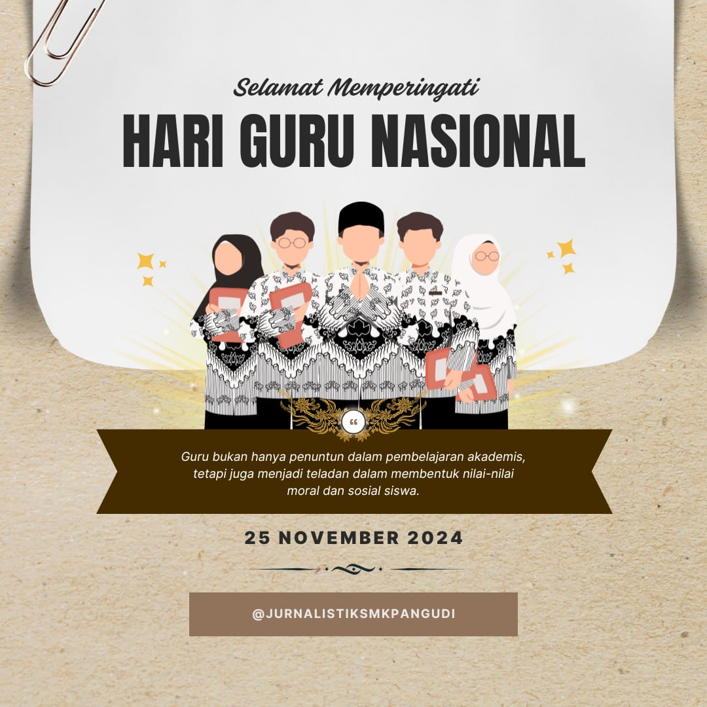

Jurnalistik - Hari Guru Nasional
Pada Hari Guru Nasional, kami mengenang jasa luar biasa dari para pahlawan pendidikan yang berdedikasi untuk mencerdaskan bangsa. Mereka adalah inspirasi bagi generasi muda untuk mencapai cita-cita mereka.
Dalam artikel ini, kami membagikan cerita inspiratif, wawancara eksklusif, dan momen-momen penting yang menggambarkan peran penting para guru dalam kehidupan kita.
Kembali ke Beranda